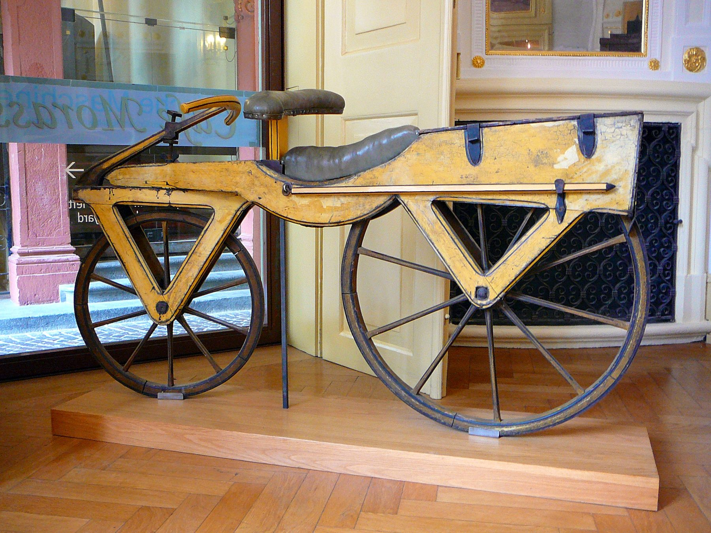
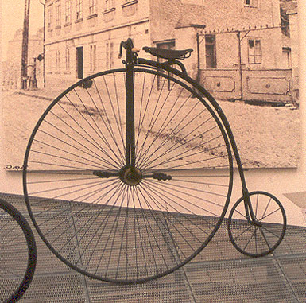

The draisine
Baron Karl von Drais introduced a two-wheeled steerable machine that riders pushed along with their feet. It had no pedals, but it established the key idea: balancing on two inline wheels could produce efficient movement.
Rolling Through Two Centuries
The bicycle began as a wooden running machine, became a dangerous status symbol, then turned into one of the most practical mobility devices ever built. Its shape changed. Its social meaning changed. Its core promise did not: inexpensive speed powered by a human body.
Why It Matters
Bicycle history is really three stories running at once: engineering progress, social change, and the spread of personal mobility. Better steering, chain drive, and pneumatic tires made bikes safer. Mass production made them cheaper. Riders turned them into tools for commuting, racing, recreation, and independence.
Timeline
Baron Karl von Drais introduced a two-wheeled steerable machine that riders pushed along with their feet. It had no pedals, but it established the key idea: balancing on two inline wheels could produce efficient movement.
French builders added pedals to the front wheel. The result was faster and more recognizably bicycle-like, but iron frames and wooden wheels made for a brutal ride on rough roads.
The penny-farthing pushed speed by enlarging the front wheel. It looked elegant and dramatic, but the riding position was high and unstable. A fall could be severe.
Equal-sized wheels, lower center of gravity, rear-wheel chain drive, and later pneumatic tires transformed the bicycle. This was the decisive design turn. The safety bicycle became the template for most bikes that followed.
Cycling exploded into mass culture. Bikes changed fashion, expanded commuting range, and became closely tied to debates about women’s independence, public life, and modernity.
The 20th century fragmented the bicycle into many forms: city bikes, track bikes, road racers, BMX bikes, and mountain bikes. Today the bicycle is also the base platform for cargo bikes and e-bikes.
Picture Gallery


Historical Voices
“I think it has done more to emancipate women than anything else in the world.”
“It is the vehicle of so much harmless pleasure.”
Bottom Line
Most machines from the 19th century were displaced by something larger, louder, or more complex. The bicycle stayed because its core economics are still excellent: low cost, low maintenance, high efficiency, and immediate personal control.